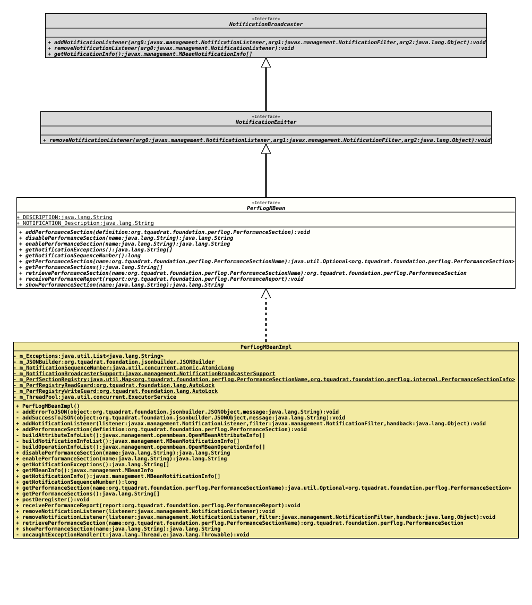

Interface PerfLogMBean
- All Superinterfaces:
NotificationBroadcaster, NotificationEmitter
- All Known Implementing Classes:
PerfLogMBeanImpl
@ClassVersion(sourceVersion="$Id: PerfLogMBean.java 1229 2026-05-04 19:11:41Z tquadrat $")
@API(status=STABLE,
since="0.25.0")
public interface PerfLogMBean
extends NotificationEmitter
This interface describes the MBean for the Foundation Performance Logging and Monitoring.
- Author:
- Thomas Thrien (thomas.thrien@tquadrat.org)
- Version:
- $Id: PerfLogMBean.java 1229 2026-05-04 19:11:41Z tquadrat $
- Since:
- 0.25.0
- UML Diagram
-

UML Diagram for "org.tquadrat.foundation.perflog.PerfLogMBean"
{kind=link}
-
Field Summary
FieldsModifier and TypeFieldDescriptionstatic final StringThe MBean description: "tquadrat Foundation Performance Logging and Monitoring".static final StringThe description for theNotificationinstances emitted by this MBean: "The execution Notification for a Performance Section". -
Method Summary
Modifier and TypeMethodDescriptionvoidaddPerformanceSection(PerformanceSection definition) Adds the definition for a performance section.Disables the performance section.Enables the performance section.String[]Returns the exceptions that caused a notification thread to abort.longReturns the notification sequence number.Returns the performance section specified by the given name.String[]Returns a list of the currently defined performance sections.voidTakes the performance report and transfers it further.Retrieves the performance section for the given name.showPerformanceSection(String name) Shows the performance section status.Methods inherited from interface NotificationBroadcaster
addNotificationListener, getNotificationInfo, removeNotificationListenerMethods inherited from interface NotificationEmitter
removeNotificationListener
-
Field Details
-
DESCRIPTION
The MBean description: "tquadrat Foundation Performance Logging and Monitoring".- See Also:
-
NOTIFICATION_Description
The description for theNotificationinstances emitted by this MBean: "The execution Notification for a Performance Section".- See Also:
-
-
Method Details
-
addPerformanceSection
Adds the definition for a performance section.- Parameters:
definition- The definition for the performance section.
-
disablePerformanceSection
Disables the performance section.
This is an operation for the MBean.
- Parameters:
name- The name of the performance section.- Returns:
- A message indicating success or failure of the operation, as a JSON String.
-
enablePerformanceSection
Enables the performance section.
This is an operation for the MBean.
- Parameters:
name- The name of the performance section.- Returns:
- A message indicating success or failure of the operation, as a JSON String.
-
getNotificationExceptions
Returns the exceptions that caused a notification thread to abort.- Returns:
- A list of exceptions that let a notification thread go down.
-
getNotificationSequenceNumber
Returns the notification sequence number.- Returns:
- The last used sequence number.
-
getPerformanceSection
Returns the performance section specified by the given name.
- Parameters:
name- The name of the performance section.- Returns:
- An instance of
Optionalthat holds the retrieved performance section.
-
getPerformanceSections
Returns a list of the currently defined performance sections.
This is an attribute for the MBean.
- Returns:
- The list of the performance section names.
-
retrievePerformanceSection
Retrieves the performance section for the given name.
If there is no performance section for the given name, a new one is created, with the threshold and the timeout disabled. Obviously, it should not be ignored.
- Parameters:
name- The name of the performance section.- Returns:
- The performance section; will never be
null.
-
receivePerformanceReport
Takes the performance report and transfers it further.- Parameters:
report- The performance report.
-
showPerformanceSection
Shows the performance section status.
This is an operation for the MBean.
- Parameters:
name- The name of the performance section.- Returns:
- The status of the performance section, or a message indicating what failed in case of error, as a JSON String.
-